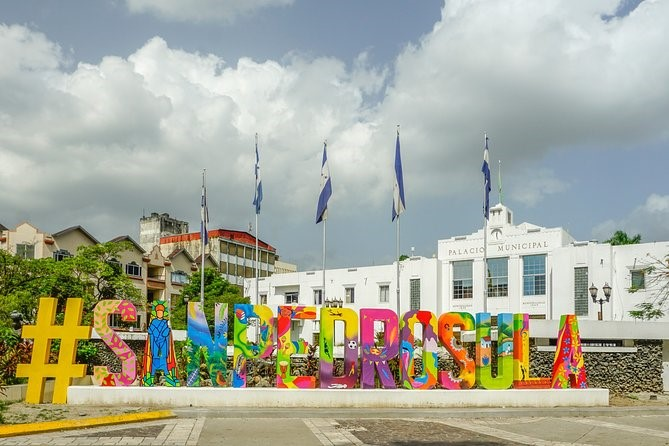

 San Pedro Sula es una ciudad del Valle de Sula, en el norte de Honduras. Es conocida por ser uno de los principales centros de transporte del país.
El Museo de Antropología e Historia de San Pedro Sula tiene exhibiciones sobre la historia de la región, desde la época precolombina hasta el presente.
Antes de la llegada de los españoles, el Valle de Sula albergaba aproximadamente a 50.000 habitantes nativos. [5] El área que alberga la ciudad moderna sirvió como un centro comercial local para las civilizaciones maya y azteca . La conquista española provocó un colapso demográfico del que la población nativa nunca se recuperaría.
El 27 de junio de 1536, Don Pedro de Alvarado fundó un pueblo español junto al asentamiento indígena de Choloma, con el nombre de Villa del Señor San Pedro de Puerto Caballos (actual San Pedro Sula).